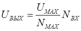
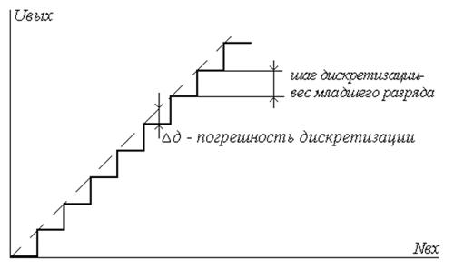
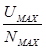
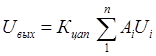
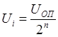
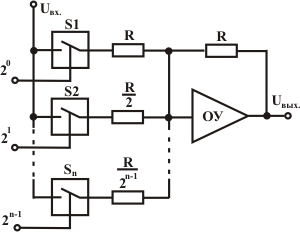
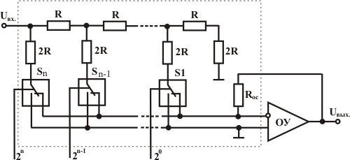
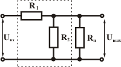

Цифро-аналоговые преобразователи
Цифро-аналоговый преобразователь (ЦАП) - это устройство для преобразования цифрового кода в аналоговый сигнал по величине, пропорциональной значению кода. Цифро-аналоговые преобразователи предназначены для преобразования цифровых кодов в аналоговые величины, например, напряжение, ток, сопротивление и т. п. ЦАП применяются для связи цифровых управляющих систем с устройствами, которые управляются уровнем аналогового сигнала. Также, ЦАП является составной частью во многих структурах аналого-цифровых устройств и преобразователей.
Принцип преобразования заключается в суммировании всех разрядных токов (или напряжений), взвешенных по двоичному закону и пропорциональных значению опорного напряжения. Другими словами, преобразование заключается в суммировании токов или напряжений, пропорциональных весам двоичных разрядов, причем суммируются только токи тех разрядов, значения которых равны логической 1. В двоичном коде вес от разряда к разряду изменяется вдвое. Наиболее распространены две схемы суммирования токов - параллельная и последовательная.
Основные понятия
ЦАП характеризуется функцией преобразования. Она связывает изменение цифрового кода с изменением напряжения или тока. Функция преобразования ЦАП выражается следующим образом

,где
Uвых - значение выходного напряжения, соответствующее цифровому коду Nвх, подаваемому на входы ЦАП.
Uмах - максимальное выходное напряжение, соответствующее подаче на входы максимального кода Nмах

Величину Кцап, определяемую отношением

, называют коэффициентом цифроаналогового преобразования. Несмотря на ступенчатый вид характеристики, связанный с дискретным изменением входной величины (цифрового кода), считается, что ЦАП являются линейными преобразователями.Если величину Nвх представить через значения весов его разрядов, функцию преобразования можно выразить следующим образом

,где
i - номер разряда входного кода Nвх; Ai - значение i-го разряда (ноль или единица); Ui – вес i-го разряда; n – количество разрядов входного кода (число разрядов ЦАП).
Вес разряда определяется для конкретной разрядности, и вычисляется по следующей формуле

,где UОП -опорное напряжение ЦАП.
Параллельная схема суммирования токов
На рисунке 1 приведена схема параллельного суммирования токов.

Рис. 1 - Параллельная схема суммирования токов
Ключи S переключаются при уровне логической 1, тем самым подключая резисторы к источнику опорного напряжения. Через резисторы протекает соответствующий весу разряда ток. Сопротивление резисторов прогрессивно изменяется в два раза от разряда к разряду.
При высокой разрядности сопротивления резисторов должны быть согласованы с высокой точностью. Особо жесткие требования предъявляются к резисторам старших разрядов, поскольку разброс тока в них не должен превышать тока младшего разряда. Вообще же, разброс сопротивления в n-м разряде должен быть меньше, чем:
ΔR / R = 2-n
Отсюда следует, что разброс сопротивления, к примеру, в третьем разряде не должен превышать 12,5%, в 10-м разряде - уже 0,098%.
Такая схема обладает целой множеством недостатков. К примеру, при различных входных кодовых состояниях потребляемый от источника опорного напряжения (ИОН) ток будет также различным, что несомненно повлияет на величину выходного напряжения ИОН. Кроме того, сопротивления весовых резисторов могут отличаться в тысячи раз, а это затрудняет реализацию таких резисторов в полупроводниковых ИС. Помимо этого, сопротивления резисторов старших разрядов могут быть соизмеримы с сопротивлением замкнутого ключа, а это приведет к погрешностям преобразования. И еще, в разомкнутом состоянии к ключам прикладывается довольно высокое напряжение, а это затрудняет их построение.
Последовательная схема суммирования токов
Последовательная схема суммирования токов позволяет устранить недостатки параллельного суммирования токов. В настоящее время по этой схеме строят большинство ЦАП. Структура последовательной схемы суммирования токов приведена на рисунке 2.

Рис. 2 - Последовательная схема суммирования токов
В такой схеме задание весовых коэффициентов осуществляется с помощью резистивной матрицы постоянного сопротивления. Основным элементом матрицы является делитель R-2R, показанный на рис. 3. При этом должно выполняться условие: если делитель нагружен на сопротивление нагрузки, то его входное сопротивление также должно быть равно сопротивлению нагрузки.

Рис. 3 - Элемент матрицы постоянного сопротивления
Поскольку ключи S соединяют нижние выводы резисторов с общей шиной питания, источник опорного напряжения работает на постоянную нагрузку, следовательно, его значение стабильно и не изменяется при любом входном коде ЦАП, в отличие от предыдущей схемы. Кроме того, резисторы 2R соединяются с общей шиной через низкое сопротивление замкнутых ключей S, напряжения на ключах небольшие (в пределах нескольких милливольт), что значительно упрощает построение ключей и схем управления ими, а также использовать опорное напряжение в широком диапазоне да еще и разнополярное. В качестве ключей используются МОП-транзисторы. Поскольку выходной ток в таком преобразователе изменяется линейно, то имеется возможность умножения аналогового сигнала на цифровой код, если вместо опорного напряжения использовать аналоговый сигнал. Такие ЦАП называютсяперемножающими (MDAC). Примером применения перемножающего ЦАП может служить цифровой регулятор громкости на 572ПА1. Вместо опорного напряжения подается входной сигнал.
Для последовательной схемы требования к точности резисторов намного меньше, чем для параллельной. Для ЦАП, имеющих высокую разрядность, необходимо согласовывать сопротивления ключей с разрядными токами. Особенно это важно для старших разрядов. Это обстоятельство снижает точность. Кроме того, такие ЦАП имеют низкое быстродействие из-за большой емкости МОП-ключей.
Помимо вышерассмотренных (и наиболее употребительных) схем существуют ЦАП на источниках тока, обладающие более высокой точностью. В таких ЦАП весовые токи формируются не резисторами небольшого сопротивления, а транзисторными источниками тока, имеющими высокое динамическое сопротивление. Примером может служить отечественный ЦАП 594ПА1.
В качестве переключателей тока могут также использоваться биполярные дифференциальные каскады. Транзисторы работают в активном режиме, а это позволяет сократить время установления.